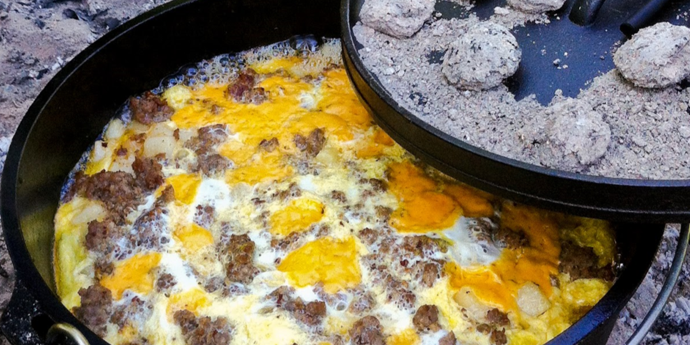

Troop 718 - Recipes

Ingredients:
- 1 pound mild pork sausage (such as Jimmy Dean®)
- 1 medium onion, chopped
- 1 clove garlic, minced
- 1 medium red bell pepper, chopped
- 1 medium green bell pepper, chopped
- 1 (2 pound) package frozen shredded hash brown potatoes
- 12 large eggs, beaten
- 1 (16 ounce) package shredded Cheddar cheese
Directions:
Step 1. Build a campfire and allow the fire to burn until it has accumulated a bed of coals. Place a grate over the fire.⠀
Step 2.
Place a 12-inch cast iron Dutch oven onto the grate.
Add sausage, onion, and garlic; cook and stir until sausage is browned and crumbly and onion is translucent, 5 to 7 minutes.
Stir in hash browns and bell peppers until well mixed.
Cook, stirring occasionally, until hash browns are hot and peppers are tender, about 15 minutes.
⠀
Step 3.
Pour beaten eggs into the Dutch oven, allowing them to seep down to the bottom.
Cover the Dutch oven and place it directly onto 5 to 10 hot coals.
Place another 12 to 18 hot coals on top of the Dutch oven lid.
Let cook until eggs are firm, about 40 minutes.
Open the lid and sprinkle with Cheddar cheese.
Cover and continue to cook until cheese has melted, about 5 minutes.
Ingredients:
- 1 pound lean ground beef
- ⅓ cup water
- 1 (1 ounce) package taco seasoning mix
- 4 (2.5 ounce) packages corn chips
- 2 cups shredded lettuce
- 1 cup shredded Cheddar cheese
- 1 chopped fresh tomato
- ½ cup sour cream
- ⅓ cup salsa
Directions:
Step 1. Cook and stir ground beef in a large skillet over medium heat until browned and crumbly, 7 to 10 minutes. Drain excess oil. Mix in water and taco seasoning. Bring to a boil, then reduce the heat and simmer for 5 minutes, stirring occasionally.⠀
Step 2.
Gently crush corn chips in the sealed bags.
Snip one top and one bottom corner off each bag, then cut open along the side edge.
Spoon equal amounts of beef, lettuce, Cheddar, tomato, sour cream,
and salsa into each bag on top of crushed chips.
Serve in the bag and eat using a fork.

Ingredients:
- 1 Pre Baked Angel Food Cake
- 6 Hershey's Chocolate Bars
- 2 pkgs Honey Maid Graham Cracker Squares
- 1/2 lrg pkg Jumbo Marshmallows
Directions:
Step 1. Tear the Angel Food cake into pieces and place in the bottom of the dutch oven.⠀
Step 2.
Break the Honey Maid squares into pieces and cover the cake, mix a few pieces into the cake pieces.
⠀
Step 3.
Break the Honey Maid squares into pieces and cover the cake, mix a few pieces into the cake pieces.
⠀
Step 4.
Cover the top with the Jet Puffed Marshmallows.
⠀
Step 5.
Use a 10 inch dutch oven and use 8-10 coals under and 12-15 coals on top for this recipe.
Check after 5 minutes. Then every 5 minutes after that. You just need to melt the marshmallows.